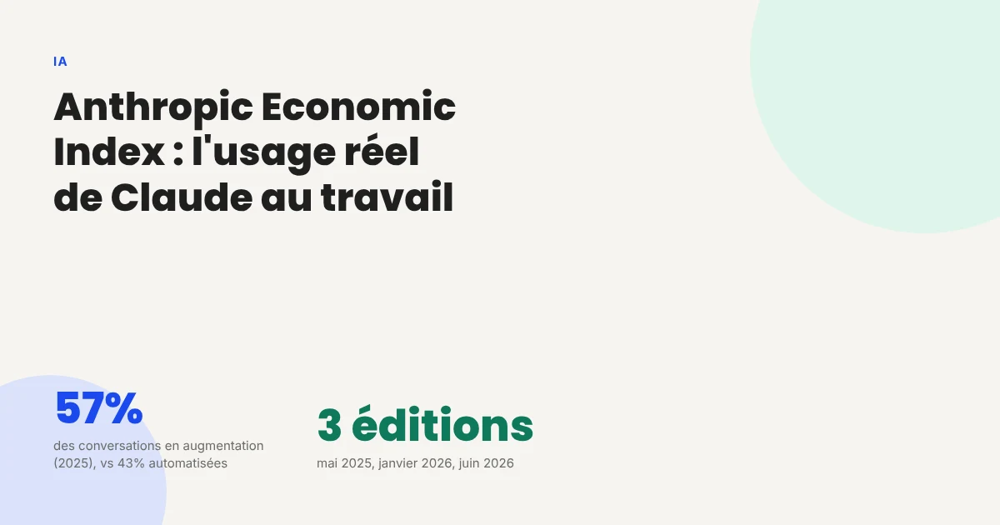

Anthropic Economic Index : ce que l'usage réel de Claude dit sur l'IA au travail
La plupart des chiffres sur « l'adoption de l'IA au travail » viennent de sondages déclaratifs. Anthropic a choisi une autre approche depuis 2025 : publier directement des patterns observés dans des millions de conversations Claude, anonymisées et classées par tâche.

Face à l'avalanche de statistiques sur « l'adoption de l'IA en entreprise » — souvent des pourcentages issus de sondages déclaratifs aux méthodologies inégales — Anthropic a pris, depuis mai 2025, une direction différente avec son Anthropic Economic Index : analyser directement des patterns d'usage réels et anonymisés observés sur sa propre plateforme Claude. Trois éditions se sont succédé depuis, chacune affinant la méthode. Ce que ces rapports montrent est instructif — ce qu'ils ne permettent pas de conclure l'est tout autant.
Le rapport original (mai 2025) : une photographie par tâche
La première édition s'appuie sur environ un million de conversations Claude.ai (comptes gratuits et Pro), classées selon une taxonomie de tâches professionnelles appelée Clio. Le constat principal : l'usage se concentre nettement sur le développement logiciel et la rédaction technique. Le rapport introduit aussi une distinction devenue centrale dans les éditions suivantes : l'augmentation, où l'utilisateur garde la main sur la tâche et s'appuie sur Claude comme assistant (57 % des conversations), contre l'automatisation, où la tâche est largement déléguée (43 %). Anthropic précise explicitement dans ce rapport ne pas s'appuyer sur des sondages d'opinion ni sur des tentatives de prévision — une position méthodologique affichée comme un choix délibéré face aux approches basées sur la déclaration.
Le rapport « primitives » (janvier 2026) : cinq dimensions de mesure
La deuxième édition introduit des « primitives » — des mesures simples construites en demandant à Claude lui-même d'évaluer certaines dimensions de conversations anonymisées (Claude.ai et API first-party). Cinq dimensions sont retenues : la complexité de la tâche, le niveau de compétence requis, l'intention, le degré d'autonomie laissé à l'IA, et le taux de succès perçu. La complexité est mesurée par le nombre d'années de scolarité que Claude estime nécessaires pour comprendre les données d'entrée d'une conversation — une métrique indirecte, mais reproductible. Sur cette mesure, ce sont les tâches les plus complexes qui bénéficient du plus grand gain de vitesse apporté par l'IA. L'augmentation reste légèrement majoritaire sur Claude.ai (un peu plus de la moitié des conversations), tandis que l'automatisation domine nettement sur le trafic API first-party — un écart qui reflète une différence d'usage entre interface conversationnelle grand public et intégration technique.
Le rapport de juin 2026 : granularité horaire et premier sondage complémentaire
La troisième édition change de pipeline de données : un échantillonnage à taux plus élevé permet d'observer des patterns d'usage à l'échelle de l'heure, et un nouveau classificateur qualifie automatiquement le résultat de chaque conversation. Fait notable, ce rapport intègre pour la première fois des résultats préliminaires d'une Economic Index Survey, un sondage déclaratif lancé en avril 2026 — mais en complément des données d'usage, pas en remplacement. La période d'échantillonnage couvre la période de déclaration fiscale américaine, et le rapport documente un pic net de conversations liées à la fiscalité autour de la date limite — un exemple concret de ce que la granularité horaire permet de voir. Le rapport note aussi que construire un site web laisse beaucoup plus de marge de jugement à Claude que traduire un document, une observation qui illustre la variabilité du degré d'autonomie selon le type de tâche.
Ce que ces données ne permettent pas de conclure
Trois limites méthodologiques méritent d'être posées clairement, et Anthropic les reconnaît elle-même implicitement par la portée qu'elle donne à ses rapports. D'abord, ces données mesurent l'usage sur une seule plateforme (Claude) et ne disent rien de l'usage sur ChatGPT, Gemini ou les autres outils IA — une tendance observée sur Claude n'est pas automatiquement généralisable à « l'IA » dans son ensemble. Ensuite, ces rapports sont des données d'usage, pas des données d'emploi ou de productivité : observer qu'une tâche est largement automatisée dans des conversations Claude ne dit rien sur son impact réel en termes d'emplois supprimés, créés ou transformés dans l'économie. Enfin, ce sont des rapports publiés par l'entreprise qui fournit l'outil mesuré — un signal de transparence réel (la méthode et les chiffres bruts sont documentés), mais qui n'équivaut pas à une étude indépendante tierce.
Pourquoi c'est pertinent pour une équipe marketing
Face à la profusion de statistiques d'adoption IA invérifiables qui circulent dans la presse spécialisée marketing, disposer d'une source qui documente sa méthodologie précisément — taille d'échantillon, taxonomie de classification, limites explicites — donne un point de repère solide, même partiel. La bonne pratique consiste à citer ces chiffres pour ce qu'ils sont (des patterns d'usage observés sur Claude, à une période donnée) plutôt que de les généraliser silencieusement à « l'adoption de l'IA » en général — une confusion fréquente dans les contenus marketing qui citent ce type de rapport.
FAQ
L'Anthropic Economic Index repose-t-il sur un sondage ?
Non, pas dans ses fondations. Anthropic précise explicitement dans le rapport original que l'index ne repose pas sur des sondages d'opinion ni sur des tentatives de prévision, mais sur l'analyse directe de données d'usage réelles et anonymisées (environ un million de conversations pour la première édition). Une Economic Index Survey a été lancée en avril 2026 en complément, mais elle s'ajoute aux données d'usage, elle ne les remplace pas.
Que montre la première édition (2025) de l'index ?
L'usage était concentré sur des tâches de développement logiciel et de rédaction technique, classées selon une taxonomie de tâches professionnelles (Clio). Le rapport distingue aussi deux modes d'usage : l'augmentation (57 % des conversations), où l'utilisateur reste dans la boucle, et l'automatisation (43 %), où la tâche est largement déléguée.
Ces données permettent-elles de dire si l'IA remplace des emplois ?
Non, et Anthropic ne prétend pas répondre à cette question avec ces rapports. L'index mesure des patterns d'usage observés sur sa propre plateforme Claude — pas l'emploi, pas la productivité réelle des entreprises, et pas l'impact macroéconomique. C'est une donnée d'usage de premier rang, utile pour comprendre comment l'IA est effectivement utilisée, mais elle ne couvre ni les autres plateformes IA ni les effets économiques en aval.
Besoin d'y voir clair sur l'impact réel de l'IA dans votre stratégie marketing ?
Pour aller plus loin, voir l'article IA dans les PME françaises : pourquoi les chiffres d'adoption se contredisent autant, et 7 mythes sur le growth hacking IA qui coûtent cher aux équipes marketing.
Pour continuer sur ce sujet.